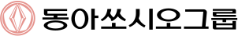
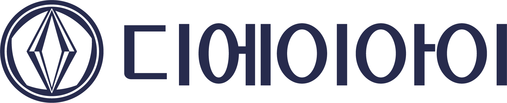

| 낯선 규제 도메인 | ① 진입이해관계자·규제 지형 해독 | ② 해독용어·데이터·병목 매핑 | ③ 연결이해관계자 정렬 | ④ 성과측정가능 숫자 |
|---|---|---|---|---|
| 굿리치보험 마이데이터 | 보험 규제·마이데이터 지형 | 청약·심사·전환 병목 | 설계사·심사·개발 | 전환율 약 20%↑ · DB 월 6,000건 |
| 코나아이지역화폐 · 20명 조직 | 지자체·정산 규제 지형 | 가맹·정산 처리 병목 | 지자체·운영·개발 (20명 총괄) | 6명→3명 · 경기·인천 재수주+김포페이 신규 |
| THK 이로움케어복지용구 · 요양 | 장기요양·수가 규제 지형 | 급여·수급자·물류 병목 | 요양기관·물류·개발 | 직배 6h→2h · 수급자조회 이용률 30% |
| 내손안에키오스크병원 원무 | 병원 원무·EMR 지형 | 접수·수납·EMR 데이터 병목 | 병원·EMR사·개발 | EMR 연계 원무 셀프서비스화 (0→1) |
| 헬스케어 · 첫 90일 | 같은 ①→②→③→④ 를 그대로 적용 | → 검증된 Use Case 1개 + 재사용 자산 + KPI | ||
